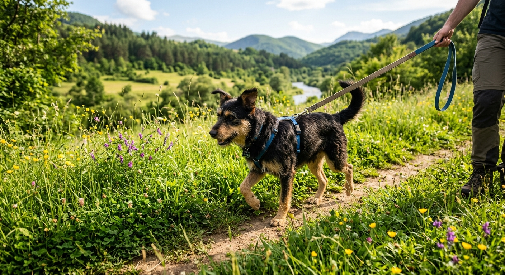
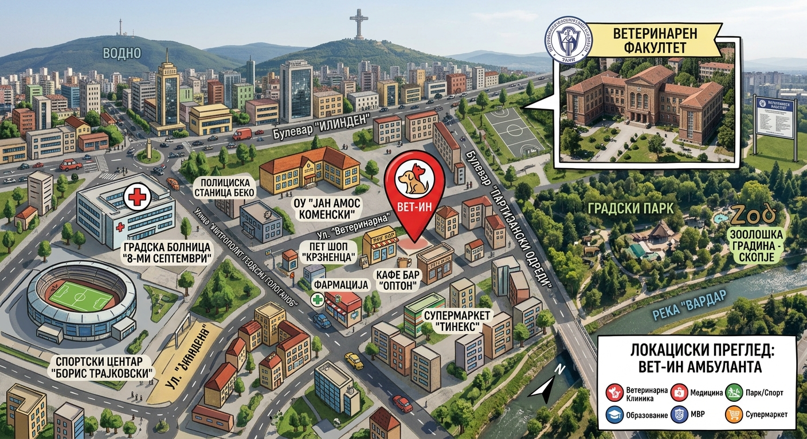

Ветеринарна амбуланта во Скопје за кучиња, мачки, мали глодари и птици. Прегледи, вакцини, дијагностика на место и итни интервенции.
Лабораторијата, ехото и рендгенот се во амбулантата, така што дијагнозата и терапијата почнуваат истиот ден.
Клинички преглед, температура и тежина, совет за исхрана. Контрола 400 ден.
Основни и годишни вакцини, вакцина против беснило, вакцинален календар со потсетник.
Анализи на крв и урина со резултат за 20–40 минути, ултразвук и рендген во амбулантата.
Дежурен ветеринар секоја ноќ и празник. Пред да дојдете, јавете се за да подготвиме сè.
Чипирање и регистрација во базата, издавање пасош (1.000 ден.) и документи за патување.
Вет-ИН работи од 2013 година. Тимот е мал намерно: вашиот миленик има една картичка и еден доктор што го познава од првиот преглед.
Внатрешни случаи, ултразвук и хронични терапии.
Операции, стерилизации и ноќни дежурства.
„Дојдовме во два по полноќ со отруено куче. Отворија за десет минути и остана под надзор до утро.“Марија Т. · сопственик на Рекс
„Мачката ми е страшлива, а тука никој не брза. Прегледот траеше половина час и за прв пат не се крие после.“Дејан С. · сопственик на Мица
„Сите документи за патување во Германија ги завршивме на едно место, со точни рокови за вакцините.“Елена П. · сопственик на Лола
Одговараме во рок од еден час во работно време. Ако состојбата е итна, не чекајте потврда — јавете се на 02 3 123 456.
Препорачано е, за да не чекате. Примаме и без термин во работно време, а итните случаи имаат приоритет секогаш.
Кучиња, мачки, мали глодари и птици. За егзотични видови јавете се однапред.
Основните анализи се готови за 20 до 40 минути, додека сте кај нас. Специфични тестови траат два до три дена.
Микрочип, важечка вакцина против беснило дадена најмалку 21 ден пред патувањето и здравствен преглед.
Да, примаме картички и готовина. За поголеми интервенции можно е плаќање на рати.
Во посебни случаи, за животни што не можат да се транспортираат. Договорот се прави по телефон.

Кога почнува сезоната, што работи навистина и кои знаци значат посета кај ветеринар.
Прочитај →
Локациски преглед со ориентири околу амбулантата.